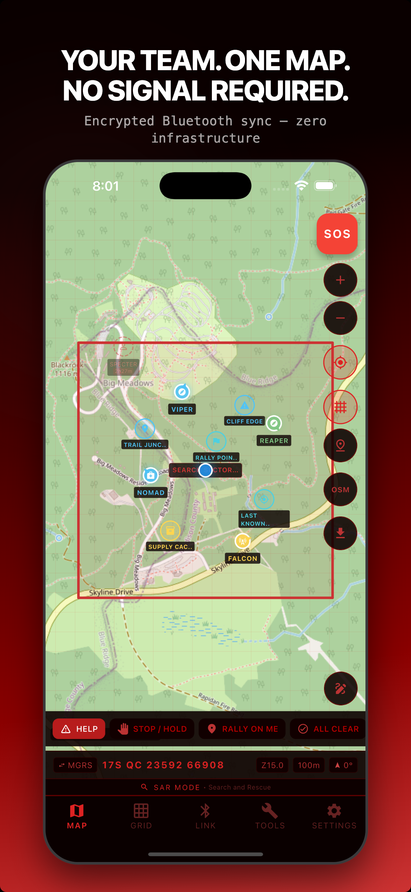
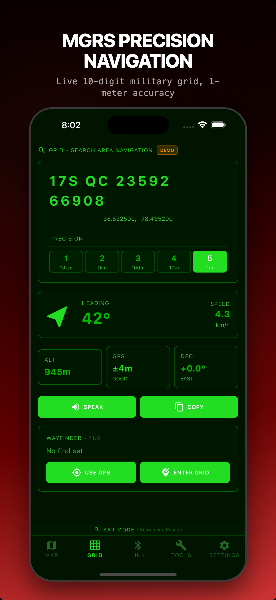
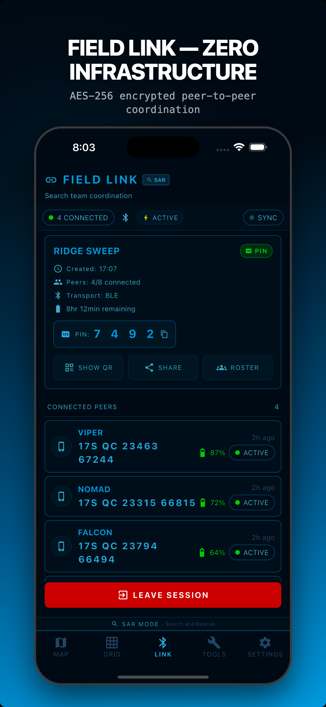
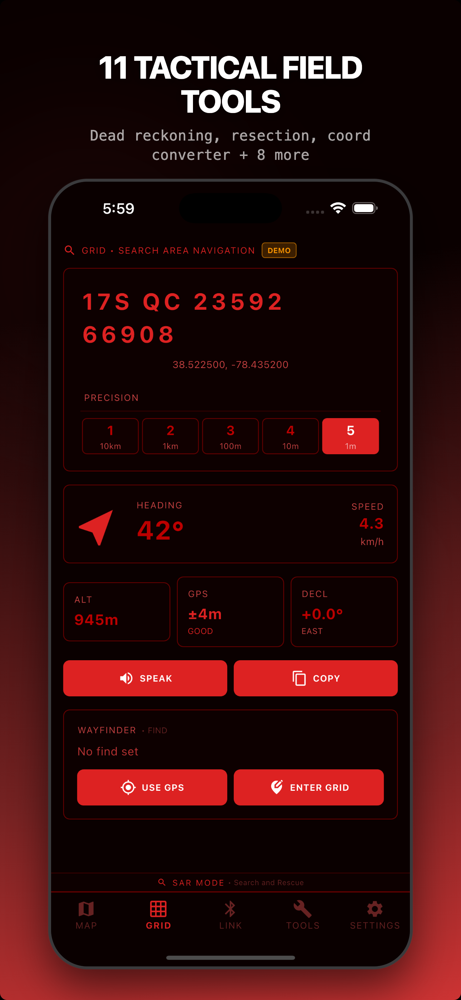
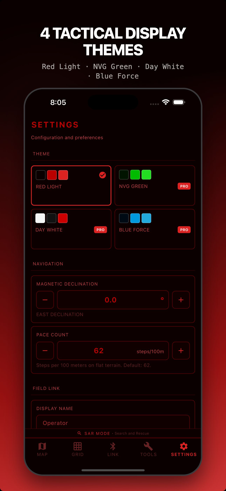
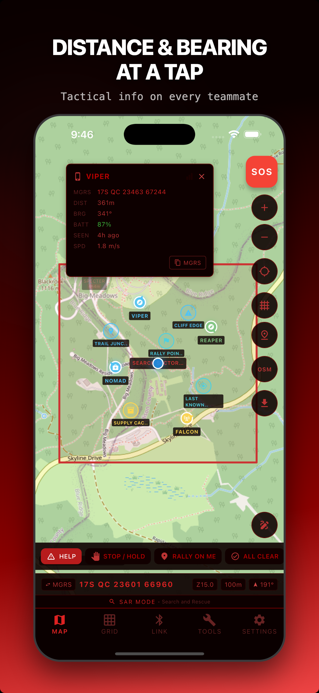
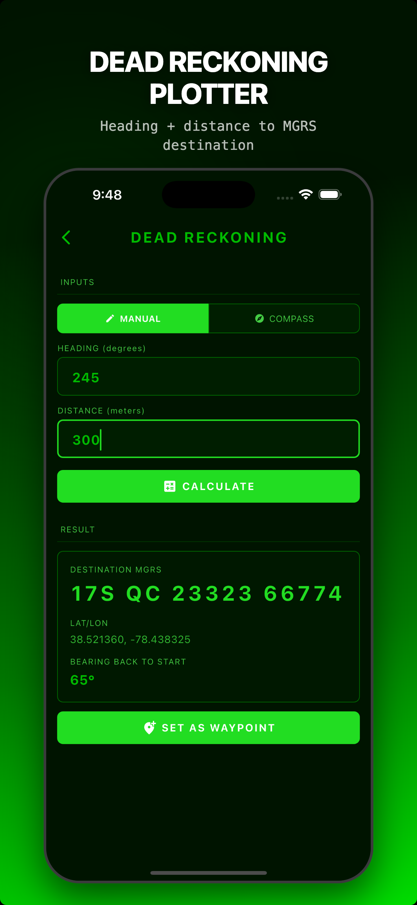
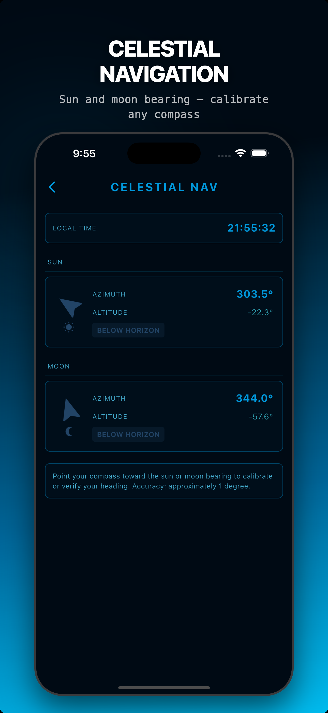
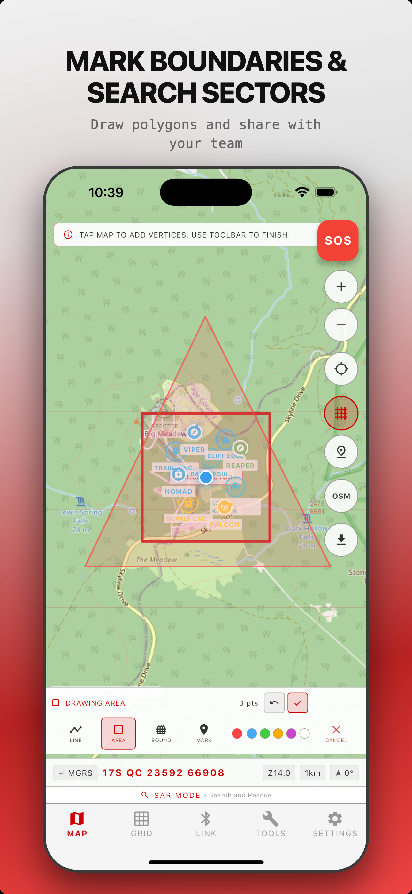
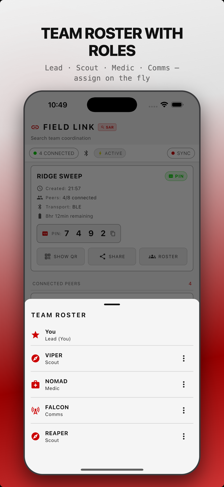

Red Grid Link
V1.5 — Secure CoordinationEncrypted team coordination over Bluetooth. No cell towers. No servers. No accounts.










What Red Grid Link Does
Field Link — Encrypted Team Sync
Auto-discover teammates via BLE on every platform with Apple Multipeer Connectivity (AWDL) on iOS and Google Play Services Nearby Connections on Android. PIN and QR sessions wrap every payload in AES-256-GCM with ECDH P-256 session keys; Open mode auto-joins for training and demos. No servers, no pairing, no configuration. Sync positions with 2-8 team members in real time.
Offline MGRS Maps
Download offline region packs from OpenStreetMap or OpenTopoMap with throttling that respects the public-tile-server usage policy. MGRS grid overlay at all zoom levels. Full offline operation with MBTiles. Native USGS / Mapbox / MapTiler integrations are on the roadmap.
11 Tactical Tools
Dead reckoning, two-point resection, pace count, bearing/back azimuth, coordinate converter, range estimation, slope calculator, ETA/speed, declination, celestial nav, MGRS reference.
Team Roles & Coordination
Assign Lead, Scout, Medic, Comms, or custom roles with callsigns. Share waypoints, draw boundaries, get alerts when teammates cross the geofence.
Ghost Markers & Time-Decay
When teammates go out of range, their last-known position stays on your map. Opacity fades over 30 minutes with projected heading vectors.
4 Operational Modes
SAR, Backcountry, Hunting, Training. UI adapts terminology, icons, and quick actions to your mission context.
New in V1.5 — Security + Communication
Encrypted Key Exchange
Real ECDH P-256 key exchange. Every peer connection gets unique derived encryption keys. Forward secrecy built in.
Emergency Beacon
One-tap SOS sends your GPS to all teammates. Retransmits every 30 seconds. Full-screen alert with distance and bearing.
Tactical Messaging
7 pre-canned tactical messages plus free text. HELP, STOP, RALLY ON ME, ALL CLEAR, and more. One tap to send.
Extended Range
BLE Coded PHY now actually negotiated after connection. Signal quality bars for each teammate. Range warnings when signal weakens.
Red Grid Link vs. The Competition
| Feature | Red Grid Link | ATAK | goTenna | Garmin inReach | Meshtastic |
|---|---|---|---|---|---|
| Price | Free / $3.99/mo | Free (software) | $849+ device | $300+ device + sub | $20-$150 radio |
| Server required | No | TAK Server | No | Garmin cloud | No |
| iOS + Android | Both | Both (iTAK on iOS) | Both | Both | Both |
| Encryption | AES-256-GCM + ECDH P-256 | AES-256 + TLS | AES-256 | Proprietary | AES-256-CTR |
| MGRS native | Yes | Yes | No | No | No |
| Offline maps | MBTiles download | Yes | No | Basic | No |
| Max team size | 8 devices | Unlimited | Varies | Unlimited | Varies |
| Accounts required | None | Yes | Yes | Yes | None |
| Additional hardware | Phone only | Phone only | goTenna device | inReach device | LoRa radio |
Built For All-Day Operations
<5%
battery/hr
Active Mode
5-second position updates
<3%
battery/hr
Expedition Mode
30-second position updates
<2%
battery/hr
Ultra Expedition
60-second position updates
Pricing
- All 4 operational modes
- 2-device Field Link
- 1 offline map region
- 11 tactical tools
- Red Light theme
- All 4 themes
- Unlimited map downloads
- After-Action Reports
- 2-device Field Link
- Everything in Pro Monthly
- Best value subscription
- All Pro features forever
- 8-device Field Link
- All future updates
- No subscription ever
Enterprise & Teams
Need multi-seat licensing, source access, or priority support for your organization?
Contact UsFrequently Asked Questions
How does Field Link work?
Field Link uses Bluetooth Low Energy on every platform with Apple Multipeer Connectivity (AWDL) on iOS and Google Play Services Nearby Connections on Android as a parallel higher-bandwidth transport. PIN and QR sessions wrap every payload in AES-256-GCM derived from an ECDH P-256 session key; Open mode auto-joins without encryption for training, demos, and trusted environments. Session keys are derived per session and discarded on session end. All data syncs peer-to-peer with no servers involved.
Does it work without cell service?
Yes. Red Grid Link uses GPS satellites for positioning and Bluetooth for team sync. No cell towers, no WiFi, no internet connection required. Download your map regions over WiFi before heading out and you have full offline operation with MGRS grid overlay, all 11 tools, and team coordination.
What data do you collect?
No accounts, no analytics, no advertising networks. Operational data (sessions, markers, tracks) stays on your device until you delete it. Field Link encryption keys are ephemeral and discarded on session end; the data they protected persists locally. Optional release-only crash diagnostics use Sentry with PII off and GPS coordinates stripped — opt out by using a build compiled without a Sentry DSN. We have no servers to store operational data on.
How is this different from ATAK?
Red Grid Link is a lightweight ATAK alternative built for civilian teams. It works on both iOS and Android (ATAK is Android-only), requires no TAK Server infrastructure, sets up in 30 seconds, and is designed for SAR, hunting, and backcountry teams rather than military operations. No IT department required.
Can I use it for hunting?
Absolutely. Hunting mode adapts the UI with hunting-specific terminology, icons, and quick actions. Track every member of your hunting party on the map, share stand locations, mark game trails, and coordinate without radio chatter. All over encrypted Bluetooth.
When is Android coming?
Android parity with the current iOS release is on the roadmap for v1.6. Cross-platform sessions (iPhone talking to Android) are a core part of Field Link's design and will ship with the Android public launch.
How far does Bluetooth reach?
Standard BLE range is 100-300 meters depending on terrain and device hardware. With BLE Long Range (Coded PHY), supported devices can reach 400 meters to 1 kilometer in open terrain. The app automatically negotiates Long Range when both devices support it and shows an "LR" badge on the connection.
What are Ghost Markers?
When a teammate moves out of Bluetooth range, their last-known position stays on your map as a Ghost Marker. The marker's opacity gradually fades over 30 minutes so you can tell how stale the data is. A projected heading vector shows their likely direction of travel based on their last movement.
Ready to coordinate?
Download Red Grid Link and get your team on the map in 30 seconds.